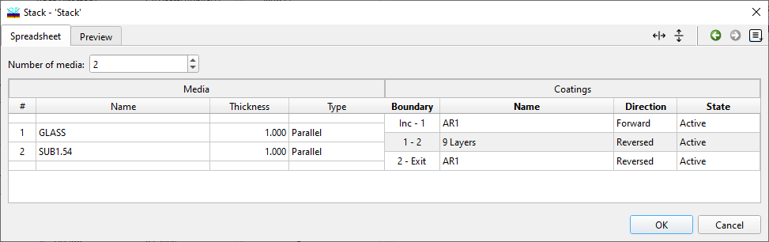
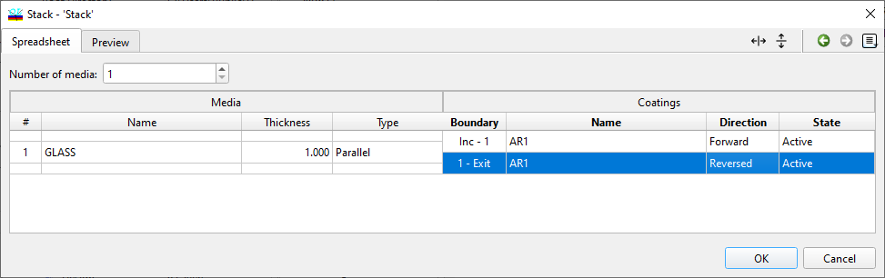
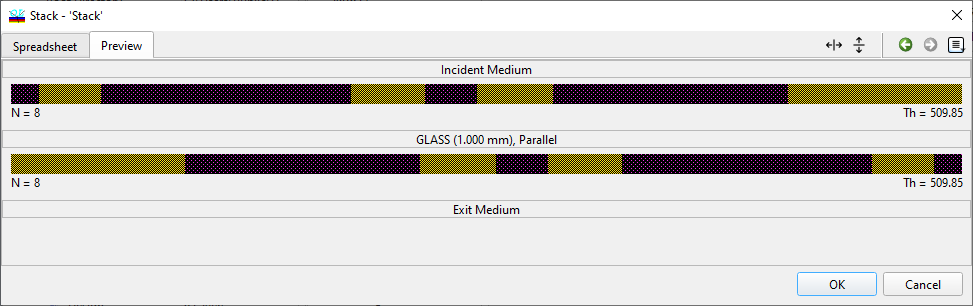

Stack Editor
Stack Editor
The Stack Editor allows you to create and modify stacks in the Stack Database and in OptiLayer memory.
An example is presented below. This stack consists of two glass media with thicknesses of 1 mm and 2 mm, respectively. A coating from the Design database named “Filter” is placed between these media. External surfaces of both glass media are covered with the same antireflection coatings named “ARCoat.”

The Media group of columns allows changes to be made:
The Name column lists the names of media that should be used in the stack. These files must be present in the Substrate database of the current Problem Directory.
The Thickness column allows you to enter the thickness of each medium in the stack (in millimeters).
The Type column allows you to specify how non-coherent interactions of surfaces should be handled:
Parallel type selection means that all reflections from all boundaries should be taken into account.
Wedged type selection means that radiation reflected from the boundaries of this medium goes out of the optical path of the device and needs to be neglected.
The Coatings group of columns allows changes to be made:
The Name column lists the names of coatings placed at a boundary indicated in the Boundary column. These files must be present in the Design database of the current Problem Directory.
|
Important: |
The Local column indicates how the current coating is stored. If a cell in this column is blank, the coating will be taken from the Design Database. If a cell in this column contains a button marked “…,” then the coating is stored together with the current stack, and additional options are available. These options can be accessed by clicking the button:
The Save Coating As… command allows you to save a coating as a design file in the Design Database for further independent use.
The Reset Coating command will discard any modifications to the coating and reload this coating from the Design Database. Please note that Reset Coating affects only the coating at the corresponding stack boundary.
The Direction column allows specification of how the layers in a stack coating are numbered:
Forward direction means that the incident radiation passes through the last layer of the coating first. In other words, layer numbers are ascending in the direction opposite to light propagation.
Reverse direction means that the incident radiation passes through the first layer of the coating first. In other words, layer numbers are ascending in the direction of light propagation.
The State column allows indication of whether the coating layer thicknesses are included for refinement and synthesis (Active state) or are merely fixed (Fixed state). The Hidden state can be used to temporarily hide (or exclude) a coating from the computations without actually removing it from the stack.
|
Note: If the names of coatings in the stack are identical, the layer thicknesses of these coatings will remain constant during all refinement and synthesis operations. If you want coatings at different stack boundaries to be optimized independently, create the required number of design copies and assign them to the corresponding stack boundaries. |

Substrate Layer: Specify the medium used as the substrate including its thickness and type.
AR Coating on Entry Side: Specify the AR coating used on the entry side of the substrate. Include details such as the name of the coating, thickness of each layer within the coating, and optical properties.
AR Coating on Exit Side: Specify the AR coating on the exit side, ensuring it matches the entry side in composition and thickness for symmetrical optical performance.
Ensure both sides of the substrate are specified to have the same AR coating unless different properties are required for specific applications. This setup helps in reducing reflections on both interfaces of the substrate with the external environment, improving transmission and reducing backscatter in optical applications.
In this example, a medium named “GLASS” with a thickness of 1 mm will be used. It will be covered by two identical coatings on both sides, and the layer thicknesses of these coatings will be optimized. The initial coatings are taken from the Design Database and are named “AR1.” We selected the Reverse direction for the second coating because, at the rear side, the direction of incident light propagation will coincide with the ascending order of the coating layers. The Preview tab allows visualization of all the coatings in the stack in graphical form:
